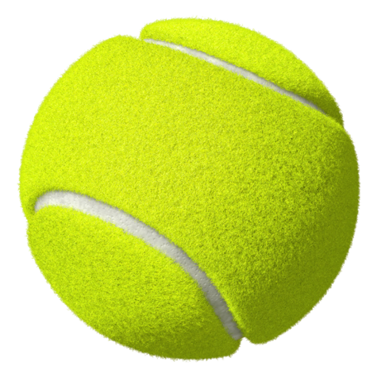

<!-- this creates a google map on the page with the given lat/lng from -->
<!-- the component as the initial center of the map: -->

<div fxLayout="row">
<agm-map fxFlex="60" [latitude]="ballsArray[0].latitude" [longitude]="ballsArray[0].longitude">
  <agm-marker *ngFor="let ball of ballsArray" [latitude]="ball.latitude" [longitude]="ball.longitude"></agm-marker>
</agm-map>
<mat-nav-list fxFlex="40">
  <h2 mat-subheader>Latest observed balls</h2>
  <mat-list-item *ngFor="let ball of ballsArray">
    
    <h3 mat-line>{{ball.name}}</h3>
    <p mat-line><small>ID: {{ball.id}}</small></p>
    <p mat-line>Time: {{ball.timestamp}}</p>
    <p mat-line>Longitude: {{ball.longitude}}</p>
    <p mat-line>Latitude: {{ball.latitude}}</p>
  </mat-list-item>
</mat-nav-list>
</div>
